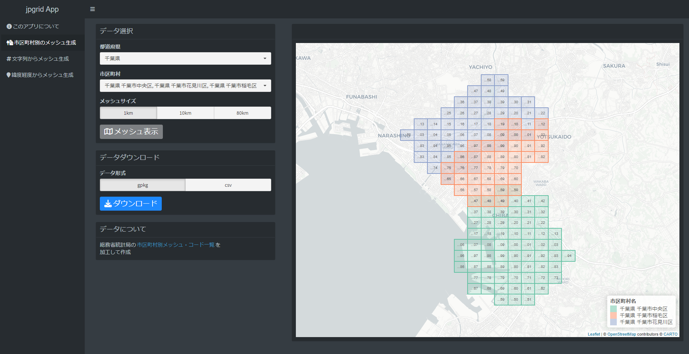

library(jpgrid)
library(tidyverse)
JGD2011 <- 6668
grid_city |>
filter(city_name_ja %in% c("千葉市中央区", "千葉市花見川区", "千葉市稲毛区")) |>
grid_as_sf(crs = 6668) |>
ggplot(aes(fill = city_name_ja)) +
geom_sf() +
scale_fill_brewer(palette = "Set2")
R Shinyを使って地域メッシュデータを使うためのWEBアプリをつくってみました．
地域メッシュとは，経度・緯度にもとづいて（日本の）地域をほぼ正方形のメッシュに分割したもので，統計データの集計区分としてよく利用されています．
今回つくったアプリは，Rパッケージのjpgridパッケージの機能の一部を提供しています． このアプリの提供機能は以下の通りです．

総務省統計局の公開する市区町村別メッシュ・コード一覧から市区町村別のメッシュを取得します．
以下のような手順で市区町村別のメッシュを生成・保存できます．

jpgridパッケージでは，grid_city データで市区町村別メッシュデータが提供されています．
以下のように，市区町村別メッシュデータを図示することができます．
library(jpgrid)
library(tidyverse)
JGD2011 <- 6668
grid_city |>
filter(city_name_ja %in% c("千葉市中央区", "千葉市花見川区", "千葉市稲毛区")) |>
grid_as_sf(crs = 6668) |>
ggplot(aes(fill = city_name_ja)) +
geom_sf() +
scale_fill_brewer(palette = "Set2")
以下のような手順でメッシュ文字列を含む表データから地域メッシュを生成・保存できます．
jpgridパッケージでは，parse_grid() で文字列から地域メッシュを生成することができます．

同様に，以下の手順で経度・緯度を含む表データから地域メッシュを生成・保存できます．
jpgridパッケージでは，coords_to_grid() で文字列から地域メッシュを生成することができます．

R Shinyで作成した地域メッシュデータのためのWEBアプリについて紹介しました．
WEBアプリの作成に利用したjpgridパッケージでは，このアプリで提供していない様々な機能が提供されています．詳しくは，こちらをご覧ください．
例として，ジオメトリをメッシュに変換するgeometry_to_grid() などがあります．
地域メッシュデータの分析に，WEBアプリやRパッケージなどを活用してはいかがでしょうか？
japan <- rnaturalearth::ne_countries(country = "japan",
scale = "medium",
returnclass = "sf")
grid_japan <- japan |>
geometry_to_grid("80km") |>
dplyr::first() |>
grid_as_sf(crs = sf::st_crs(japan))
japan |>
ggplot() +
geom_sf() +
geom_sf(data = grid_japan,
fill = "transparent")